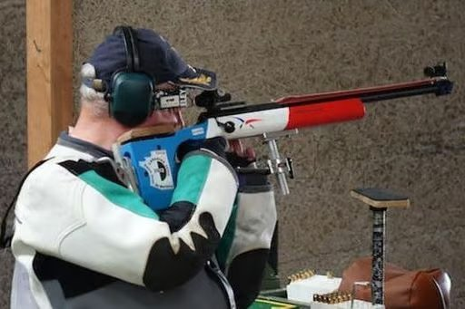

Christian Alquier
Christian Alquier tire à la carabine au Club de Tir Salonais, à Salon-de-Provence (Bouches-du-Rhône, Ligue de Provence de la FFTir). Il est présent sur les pas de tir à 10 m comme à 300 m, notamment en 3x20 libre, et s’engage dans l’animation et la promotion du tir sportif.
Un carabinier du Club de Tir Salonais

Le club
Dirigeant du club (il en est le porte-parole dans la presse en 2015) et fidèle tireur salonais, il défend les couleurs du Club de Tir Salonais dans les championnats régionaux et nationaux.
Les disciplines
La carabine 10 m et la carabine 300 m, en particulier l’épreuve 3x20 : 20 coups couché, 20 coups debout et 20 coups à genou.
« Je tire depuis plus de 40 ans juste par passion », confiait-il à La Provence en 2016, heureux de monter sur le podium national face à de jeunes tireurs. Il voit le championnat de France 300 m comme une fête, où amateurs et tireurs de haut niveau se retrouvent sur le même pas de tir.
Repères et résultats
| Saison | Compétition | Épreuve | Résultat | Source |
|---|---|---|---|---|
| 2014-2015 | Championnats départemental et régional 10 m (Marseille) | Carabine 10 m, Seniors 3 | Champion de Provence en individuel, et champion de Provence par équipes avec Jean-Claude Coste, Martial Moll et Alain Nectoux ; titre départemental par équipes | La Provence |
| 2015 | Championnat de France 300 m (Saint-Jean-de-Marsacq, Landes) | Carabine 300 m, couché et 3x20 | Au pied du podium : avec Eric Mathieu, ils se classent 4e et 5e, à quelques points des premiers | La Provence |
| 2016 | Championnat de France 300 m (Landes) | Carabine 3x20 libre, Seniors 2 | Vice-champion de France, 536 points, derrière le Montpelliérain Multner (550) | La Provence |
| 2017-2018 | Championnat régional 10 m, Ligue de Provence | Carabine 10 m, Seniors 3 | 1er, 562,1 points | Statis’tir |
| 2024 | Championnat de France 300 m | Carabine 3x20, Seniors 2 | 7e en individuel, 482 points | Statis’tir |
| 2024 | Championnat de France 300 m par équipes (Châteauroux) | Carabine 3x20, Seniors | Champions de France avec Christian Haquet et Eric Mathieu, 1 396 points : le 4e titre consécutif du trio | FFTir, MesInfos |
Un résultat manque ou est inexact ? Écrivez-nous à contact@MonTirSportif.fr.